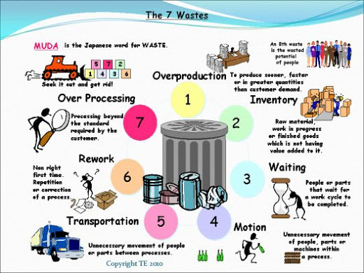
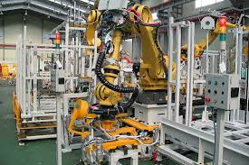
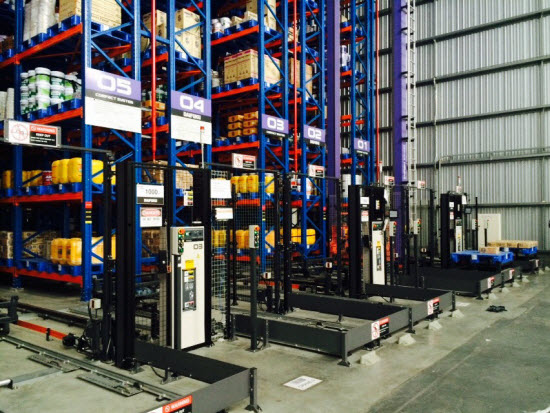
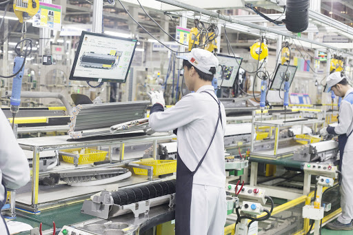
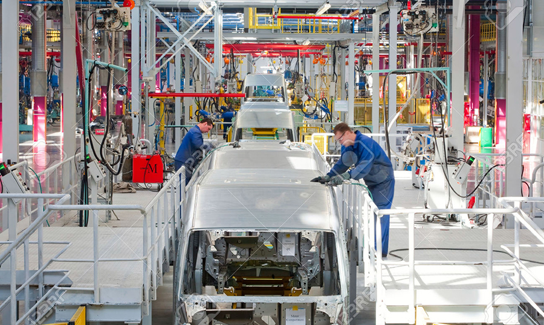
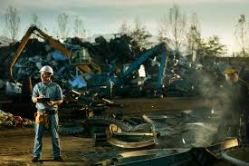

https://lh3.googleusercontent.com/proxy/6FxOUscW4H5J84C08SJMcrxS6KhPokK6m_BBW20RaNd8UhA6jZnI_022euyPtUvhgWBECOyamXWbxjCIZDCpau9X-t0w7rsf8bZDgNBu6ghowajOVyd71w
7 WASTES
ความสูญเปล่า7ประการของการผลิตแบบลีน
1.ความสูญเสียเนื่องจากการผลิตมากเกินไป (Overproduction)

ในกระบวนการผลิตในโรงงานมีสิ่งหนึ่งที่ทำให้เกิดความสูญเสีย นั่นก็คือความเชื่อที่ว่าต้องผลิตออกมาจำนวนมากที่สุดเท่าที่จะทำได้ เป็นการสร้างผลผลิตล่วงหน้า
ทำให้เกิดผลผลิตมากเกินความจำเป็น เกิดการสูญเสียจากต้นทุนการผลิตต่อหน่วยที่มาจากการเกิดงานจำนวนมาก
ปัญหาที่เกิดจากการผลิตที่มากเกินไป คือการสูญเสียแรงงาน สูญเสียผลผลิตบางส่วนที่เกิดจากการเน่าเสีย รวมถึงการใช้ทรัพยากรที่มากเกินความจำเป็น ณ ขณะนั้น
ปรับปรุงได้โดยการลดกำลังการผลิตลงเพื่อให้สอดคล้องกับจำนวนของการนำออกของผลผลิตสู่ท้องตลาด ช่วยลดความสูญเสียที่เกิดขึ้นจากการทำงานของเครื่องจักร
อาจต้องลดการตั้งเวลาของเครื่องจักรลงเพื่อให้ได้ผลผลิตที่เหมาะสม
2.ความสูญเสียเนื่องจากการเก็บวัสดุคงคลัง (Inventory)
>
ความสูญเสียที่เกิดจากการเก็บวัสดุคงคลังนั้นมาจากการสั่งซื้อ Material จำนวนมากต่อหนึ่งครั้ง ด้วยความคิดที่ว่าจะมีวัสดุเพียงพอต่อการผลิตสินค้า
ทั้งยังมีในเรื่องของการซื้อเพื่อแลกส่วนลด ทำให้มีวัสดุอยู่ในโกดังคลังสินค้ามากเกินความจำเป็น และเกิดความสูญเสียกลายเป็น waste
ปัญหาที่เกิดขึ้นจากความสูญเสียนี้ ได้แก่ การใช้พื้นที่ในการจัดเก็บที่มากเกินความจำเป็น ต้นทุนจม หากมีการปรับเปลี่ยนแผนในการบริหารจัดการ อาจทำให้วัสดุตกค้าง
โดยไม่มีกำหนดการว่าจะได้ใช้งานเมื่อไร
3.ความสูญเสียเนื่องจากการขนส่ง (Transportation)
ความสูญเสียจากการขนส่งเกิดจากการขนส่งในระยะทางที่มากเกินความจำเป็น ทำให้เกิดต้นทุนในเรื่องของเชื้อเพลิง แรงงาน ค่าบำรุงรักษารถยนต์ที่ใช้ขนส่ง
ปรับปรุงได้โดยการศึกษาเส้นทางการขนส่งให้ดีเพื่อให้ระยะทางสั้นที่สุด และบริหารจัดการในการขนส่งแต่ละครั้ง เพื่อการขนส่งวัตถุที่มากที่สุดต่อครั้ง เพื่อประหยัดจำนวนครั้งในการส่ง
และควรบริหารจัดการในเรื่องของการจัดวางเครื่องจักรให้เหมาะสม ระหว่างโรงงานการผลิตไม่ควรอยู่ห่างกันเกินไป เพื่อประหยัดต้นทุน
4.ความสูญเสียเนื่องจากการเคลื่อนไหว (Motion)

ความสูญเสียด้านนี้สอดคล้องกับแรงงานในกระบวนการผลิต การให้คนงานมีการเคลื่อนไหวมากๆ อาจมาจากการวางวัตถุอยู่ห่างกัน ทำให้ต้องเดินไกล หรือเอื้อมหยิบของที่อยู่ไกล
รวมถึงการก้มตัวยกของหนักบนพื้น ฯลฯ ส่งผลให้เกิดความเหนื่อยล้าและอาจบาดเจ็บต่อร่างกาย ทำให้ทำงานได้ล่าช้า
ปรับปรุงโดยการจัดวางสิ่งของต่างๆ ให้อยู่ใกล้กัน รวมทั้งการจัดวางผังภายในโรงงงานให้เหมาะสมกับกระบวนการทำงานภายในโรงงาน
5.ความสูญเสียเนื่องจากกระบวนการผลิต (Processing)

กระบวนการผลิตในโรงงานที่ส่งผลให้เกิดการทำงานซ้ำซ้อนหลายขั้นตอน ทำให้เกิดความสูญเสียได้เช่นกัน เกิดปัญหาในเรื่องของต้นทุนที่ไม่จำเป็นในการทำงาน
และส่งผลให้การทำงานล่าช้าออกไป
ปรับปรุงโดยการใช้หลักการ 5 W 1 H ในกระบวนการผลิต ได้แก่ What ทำอะไร When ทำเมื่อไร Where ทำที่ไหน Who ใครเป็นผู้ทำ How ทำอย่างไร และ Why ทำไม
เพื่อวิเคราะห์การทำงานและบริหารจัดการได้อย่างเหมาะสม
6.ความสูญเสียเนื่องจากการรอคอย (Delay)
เกิดจากการหยุดทำงานของเครื่องจักรหรือพนักงาน ส่งผลต่อการผลิต ทำให้เกิดการรอคอยบางปัจจัยที่จำเป็นต่อการผลิต ปัญหาที่เกิดขึ้นคือ ต้นทุนที่สูญเปล่าของแรงงาน
เครื่องจักร ซึ่งไม่ก่อให้เกิดมูลค่าเพิ่ม เกิดต้นทุนค่าเสียโอกาส
การปรับปรุงโดยการจัดลำดับการผลิตให้ดี และจัดสรรปริมาณแรงงานให้มีความสมดุลในการผลิต มีแรงงานเพียงพอที่จะทดแทนหากเกิดการหยุดการทำงานของแรงงานบางส่วน
รวมถึงฝึกทักษะการทำงานให้กับแรงงาน เพื่อรองรับการทำงานทดแทน
7.ความสูญเสียเนื่องจากการผลิตของเสีย (Defect)

ปัญหาจากการผลิตของเสีย ทำให้สิ้นเปลืองการผลิต เพราะต้องผลิตใหม่หรือกำจัดทิ้งไปโดยเปล่าประโยชน์ ทั้งยังเกิดการซ้ำซ้อนในการทำงาน เกิดต้นทุนค่าเสียโอกาส
ปรับปรุงโดยการปรับปรุงมาตรฐานการผลิตให้ดีขึ้น เพื่อลดอัตราของเสียให้ลดลง พัฒนาวิธีการทำงานของพนักงาน เพื่อป้องกันการผลิตของเสีย